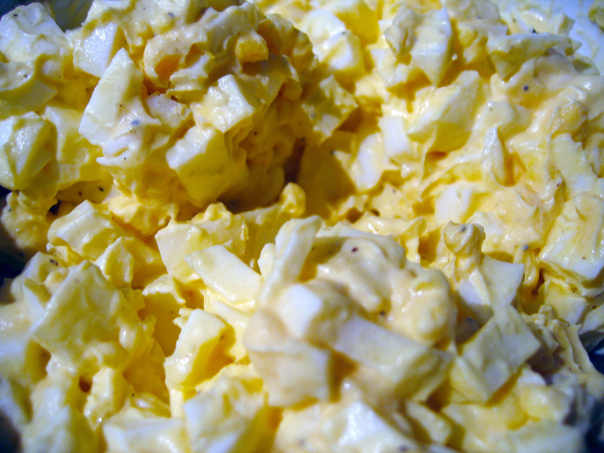

Egg Salad Recipe

Description
Make deli-worthy egg salad sandwiches at home with this top-rated recipe. It comes together easily
with ingredients you likely already have on hand, creating a creamy, flavorful, and perfectly seasoned
filling. Whether piled onto rye bread, spooned over crackers, or served in a croissant, this is an egg
salad you’ll come back to again and again.
Ingredients
- Eggs: Of course, this egg salad recipe starts with eggs!
- Condiments : You’ll need mayonnaise and mustard.
- Green onion: Green onions lend a pop of flavor, color, and crunch.
- Seasonings: This egg salad is simply seasoned with salt, pepper, and paprika.
Directions
- Gather all ingredients.
- Place eggs in a saucepan and cover with cold water. Bring water to a boil and immediately remove from heat.
Cover and let eggs stand in hot water for 10 to 12 minutes.
- Remove eggs from hot water; cool, peel, and chop.
- Place chopped eggs in a bowl; stir in mayonnaise, green onion, and mustard. Season with paprika, salt, and pepper.
- Stir and serve on your favorite bread, crackers, or salad greens.